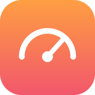
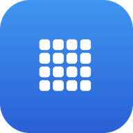
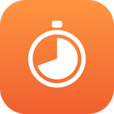

Pocket Tools
Small, open-source web apps for everyday life. Open one in your browser, add it to your home screen, and it works like a regular app — no app store, no ads, no tracking.
Apps

Rate your day from 0 to 10 in one tap. See weekly, monthly and yearly trends, and get a gentle daily reminder.

Tick off habits every day or week, keep streaks going and watch your progress grow.
Track what you're reading, what's next and what you've finished. Add books by scanning the barcode, save quotes, share your shelf.
Log an expense in two taps: type the amount, tap a category. Your own categories, a monthly view, and Apple Pay payments filled in automatically.
A light meter for film photography: spot or average metering with the phone camera, lockable ISO, aperture and shutter, and a journal of every frame on every roll.

A one-handed countdown timer: press and hold a button to add time. Works offline, no sign-in.
One-to-one HD video calls over a permanent link. Peer-to-peer, no account needed.
Run your own copy
Every app is a small, readable project you can deploy to your own account in a few minutes:
- Fork the repository.
- In Netlify, import your fork and set Base directory to the app folder, e.g.
apps/timer. - Follow the app's README for any extra setup (Firebase, push keys).
Contribute
Found a bug or have an idea? Open an issue. Pull requests are welcome — see the contributing guide and Code of Conduct.